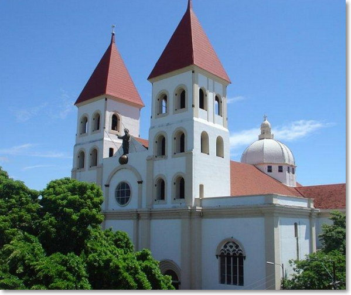
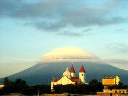

San Miguel es una ciudad y municipio del departamento de San Miguel, El Salvador. Es también la cabecera departamental del departamento homónimo. Históricamente ha sido y sigue siendo, por casi 500 años ya, la ciudad más importante de la zona oriental del país. Tiene una población estimada de 247 119 habitantes para el año 2013, por lo que representa la tercera ciudad en importancia de la nación salvadoreña. San Miguel fue fundada en el año 1530, convirtiéndose así en la segunda ciudad colonial española de los territorios hoy salvadoreños, pero se trasladó a su actual ubicación hasta en 1586. Desde entonces, San Miguel se convirtió en émula y rival de San Salvador como segunda ciudad en importancia dentro de la Alcaldía Mayor de San Salvador y, posteriormente, de la Intendencia de San Salvador durante toda la época de colonización española. San Miguel vio fenecido su liderazgo político dentro de la nación a finales del siglo XIX y comienzos del XX debido al ascenso económico de Santa Ana con la agricultura del café. Aunado al hecho que el gobierno salvadoreño dividió toda la zona oriental en cuatro departamentos con el afán de disminuir la influencia política de la élite migueleña.
En un segundo orden administrativo, San Miguel se divide en distritos, los cuales son los siguientes:
San Miguel (que agrupa los municipios: San Miguel, Chapeltique, Chirilagua, Ciudad Barrios, Comacarán, Moncagua, Quelepa y Uluazapa) Chinameca (que agrupa los municipios: Chinameca, El Tránsito, Lolotique, Nueva Guadalupe, San Jorge y San Rafael Oriente) Sesori (que agrupa los municipios: Sesori, Carolina, Nuevo Edén de San Juan, San Antonio del Mosco, San Gerardo y San Luis de la Reina)
Este es uno de los departamentos de la zona oriental más grandes y esplendorosos de nuestro territorio. San Miguel, famoso por su gastronomía, sus tradiciones coloridas, sus artesanías, sus lugares turísticos y, sobre todo, por su famoso carnaval, que se realiza en noviembre. En este cálido pedacito de nuestro terruño puedes encontrar parques acuáticos con piscinas refrescantes, playas paradisíacas de singular belleza, lagunas, ruinas arqueológicas… en fin, muchos lugares de diversión. La laguna de Aramuaca, alejada del bullicio y del ajetreo de la ciudad de San Miguel se encuentra este oasis de pura diversión. Sus refrescantes aguas y la espesa vegetación de su alrededor le brinda a los turistas toda la frescura y la belleza que ellos buscan.
